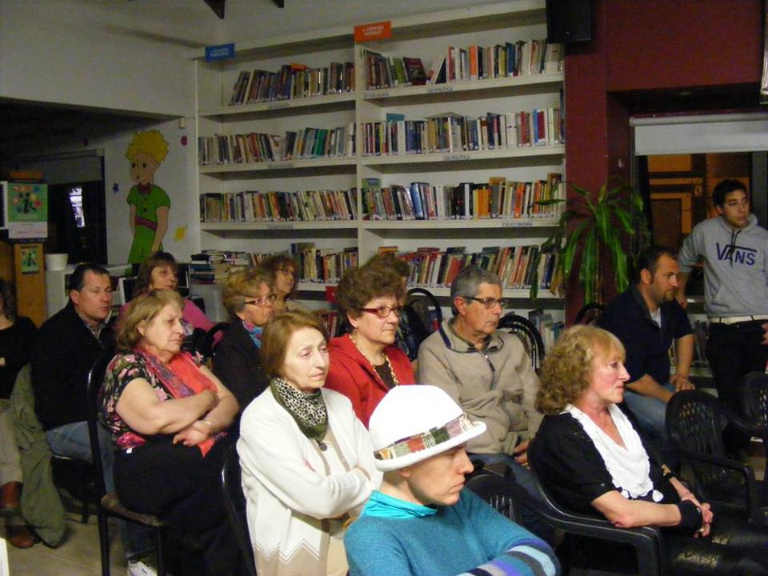

El encuentro, que comenzará este sábado a las 16 horas, se realizará para implementar un taller de Lengua Eslovaca.
La Biblioteca Popular de Sierras Bayas comunicó que el sábado, a las 16 horas, se realizará una reunión para implementar un taller de Lengua Eslovaca.
Los interesados podrán concurrir a la sede ubicada en Rivadavia 2190 y la propuesta estará a cargo de Nelly Ñuñuk de Mazza.
Se dictará los lunes y miércoles de 19:00 a 21:00 en su sede de Rivadavia 2190. Consultas al 422123.
“Más que una biblioteca es un centro cultural” dicen Paola Echeverría y Karina Vivoda de la comisión directiva de la entidad serrana. Allí se dictan talleres de narrativa, de fotografía y de idioma inglés e italiano durante el año y ya se reciben las inscripciones.
En diálogo con “Olavarría en comunidad” Paola y Karina, presidenta y vice, señalaron que el espacio ya resulta una limitación y es por eso que no se pueden organizar dos talleres en forma simultánea.También, y a propósito de ello, recientemente pidieron la colaboración de las empresas radicadas en Sierras Bayas para poder comprar más módulos de biblioteca para los libros.
Destacaron la vida de la biblioteca durante el año, donde los chicos y jóvenes acuden a realizar las tareas y consultar el material, que merced a los subsidios estatales puede estar actualizado.
El espacio actual sobre la calle Rivadavia fue construido con fondos municipales en el año 1998 en terrenos del Ferrocarril. La entidad había nacido en 1948 y pasado por varias sedes, siempre con gran inserción comunitaria.
Consultadas sobre la gestión de la biblioteca, señalan que las reuniones son casi a diario y de manera permanente se van generando proyectos. Para este año, planean terminar de diseñar el rincón infantil, que ya tiene un mural alusivo a “El Principito”